Confiuring the UDP Portal#
UDP portal is an online portal where you can
- Create new games
- Create in-app purchasable items
- Publish games to partner stores
You can go to UDP portal via the URL https://connect-staging.unity.com/udp. Alternatively, you can check out the GameSetting.asset file in the Inspector window in Unity Editor, and then go to UDP portal by clicking See More in Browser.
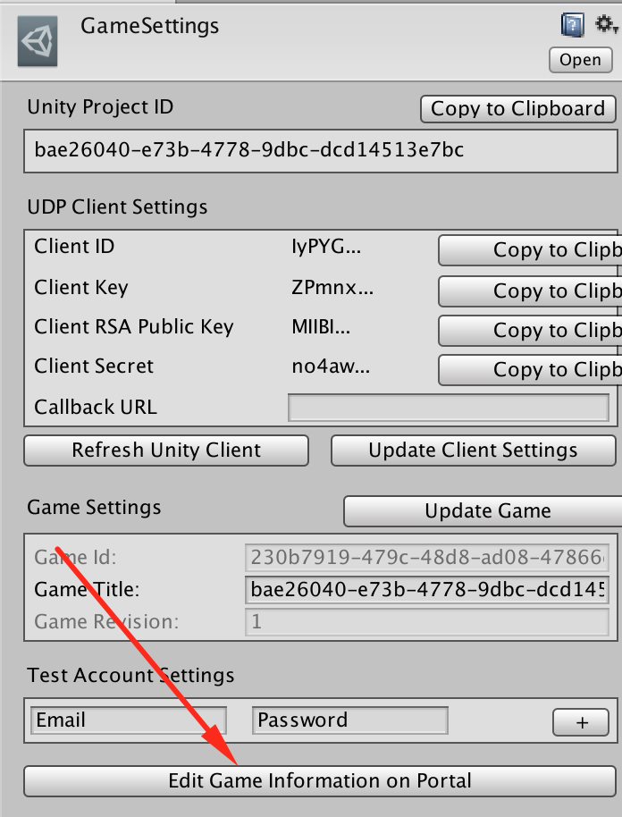
Creating new Games#
With UDP portal, you can create a new game.
- Create a company profile and pupulate the company profile.
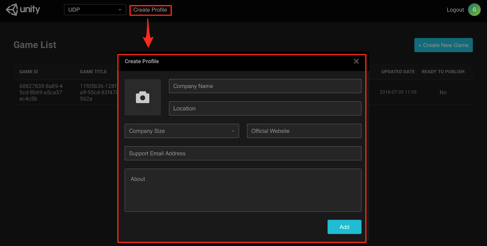 - Create a new game and specify a name for it.
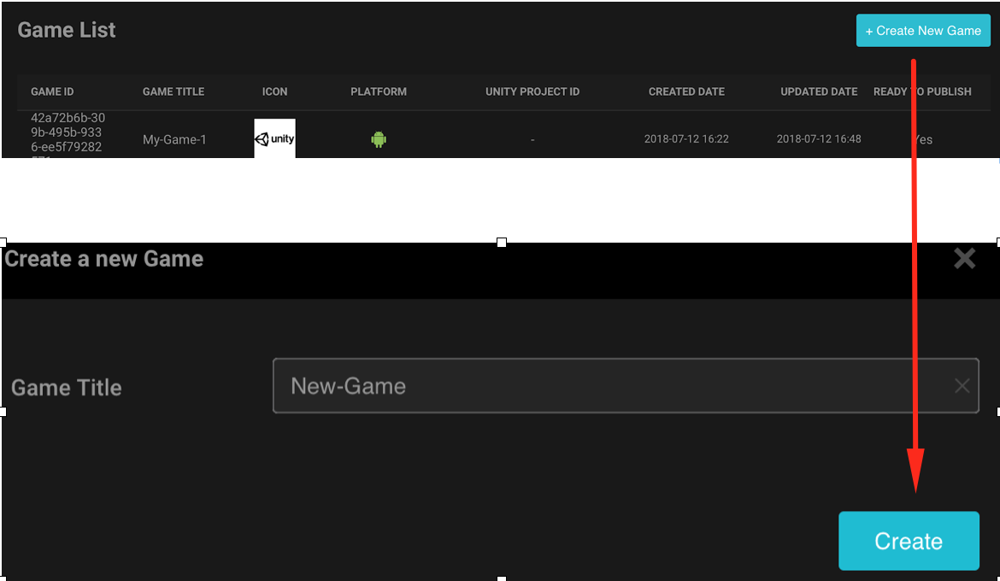 - Populate the Game info table and upload your game file.
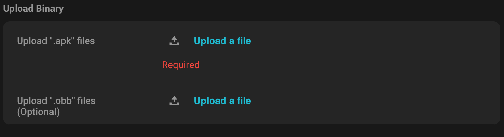
Creating In-App Purchasable Items#
Create IAP items on UDP portal, as follows:
- Select your game on UDP portal
- Create an IAP item by selecting Add Item (GAME INFO->IAP->Add Item)
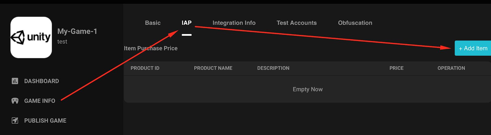
Publishing Your Game from UDP Portal to Stores#
With UDP portal, you can publish your game to a partner store. Currently the supported stores include Google, Amazon, Samsung, CloudMoolah, and Xiaomi.
Select your game in the Portal.
In the PUBLISH GAME tab, add the store you want to publish to.
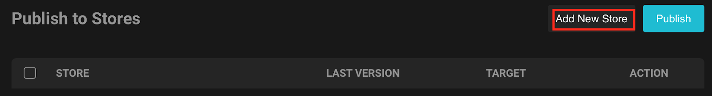
Choose the Store and Package Name. After you click Add, you will be redirected to the website of CloudMoolah, where you fill in the information of your company and bank account.
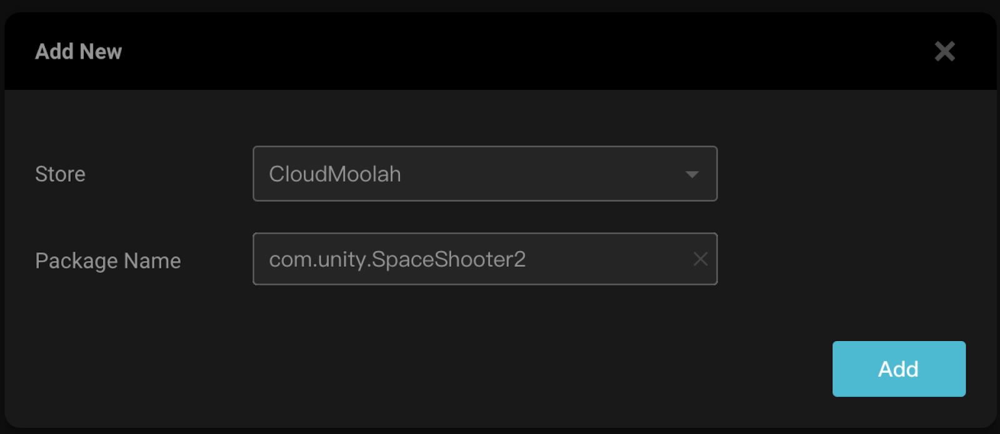- Choose Edit to configure the store.
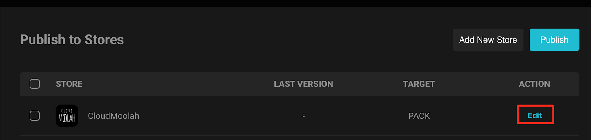 - Populate the following fields.
..Target SDK: Unless you have a special requirment, choose the latest version.
..Available Step: If you choose Pack, UDP only pack the game; If you choose Sync to Test, UDP pack the game and push it to the testing system of the store; If you choose Sync to Prod, UDP pack the game and push it to the productive system of the store.
..Price: Specify the price you assign to the game.
..Apk Version,Package Name,AppID,Hash Key,IAP Callback URL,IAP Callback Option: Keep the default setting.
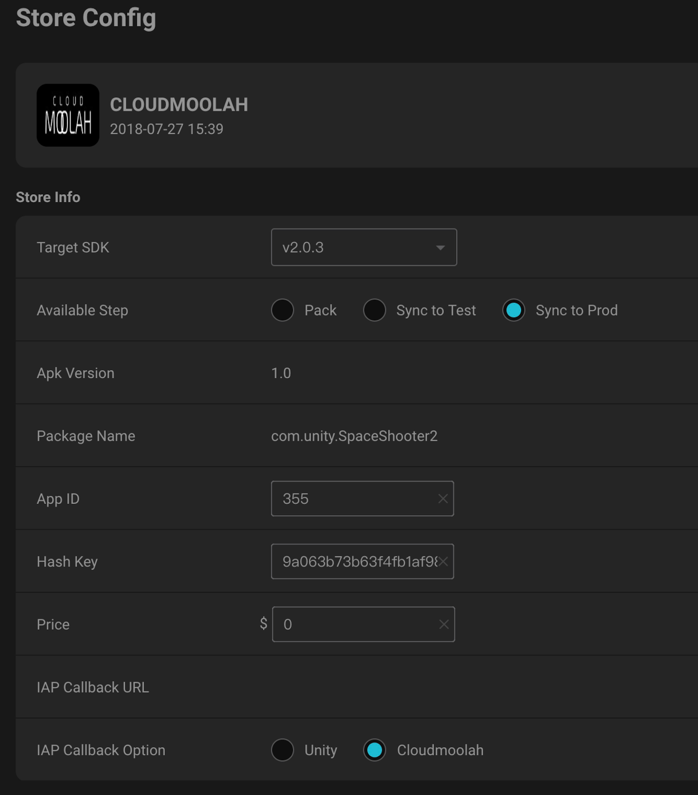 - Publish your game to the store.
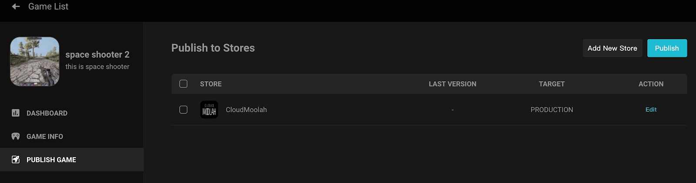 - In the DASHBOARD tab, you can see the overall situation of your publishing tasks.
..Pending, which indicates the number of ongoing tasks
..Success, which indicates the number of successful tasks
..Failed, which indicates the number of failed tasks
..Total, which indicates the total number of all tasks
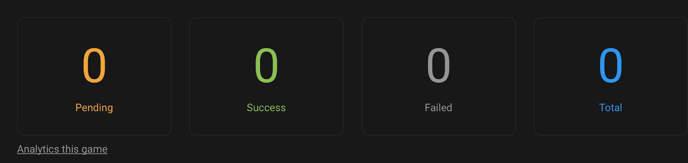